El presidente venezolano , Hugo Chávez , calificó hoy de " extraordinaria " a la recién concluida Cumbre del G-77, celebrada esta semana en la caribeña isla de Cuba.
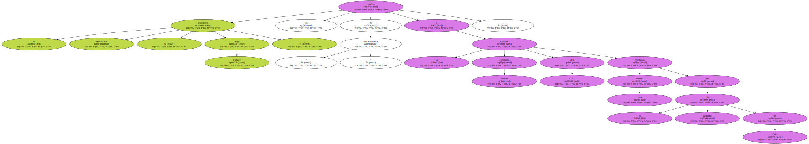Chávez , al pisar suelo de su país , tras regresar de La Habana , señaló que el encuentro de los presidentes y representantes de las naciones pobres fue realmente extraordinario e " histórico " para todo el mundo.
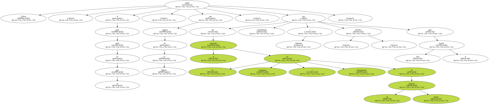En un resumen sobre las actividades que realizó en la isla , el gobernante venezolano dijo que la Cumbre sirvió para que los representantes de los diversos países se conocieran personalmente y para que se plantearan un plan común de una década , que tiene como objetivo fundamental la mejora de las relaciones sur-sur.
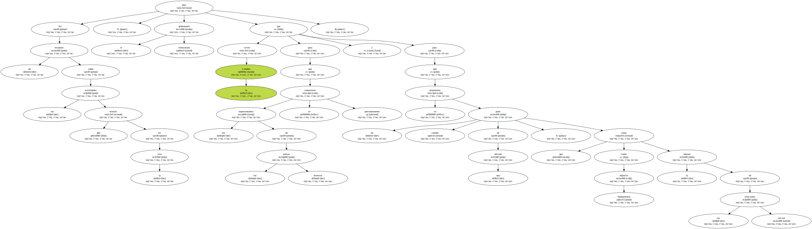" Fue muy oportuna , una Cumbre realmente histórica , nos ayudó a hacer las relaciones bilaterales con representantes de naciones con las que Venezuela tiene intereses " , destacó el mandatario.
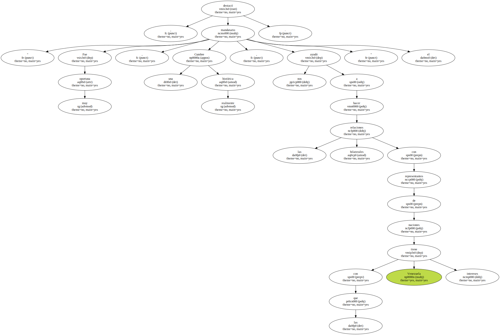Chávez , en ese sentido , reveló que durante los cuatro días de la cita cubana , consiguió avances en algunos aspectos de las relaciones bilaterales que sostiene con Guyana , nación con la que Venezuela sostiene una disputa territorial desde hace más de 100 años.
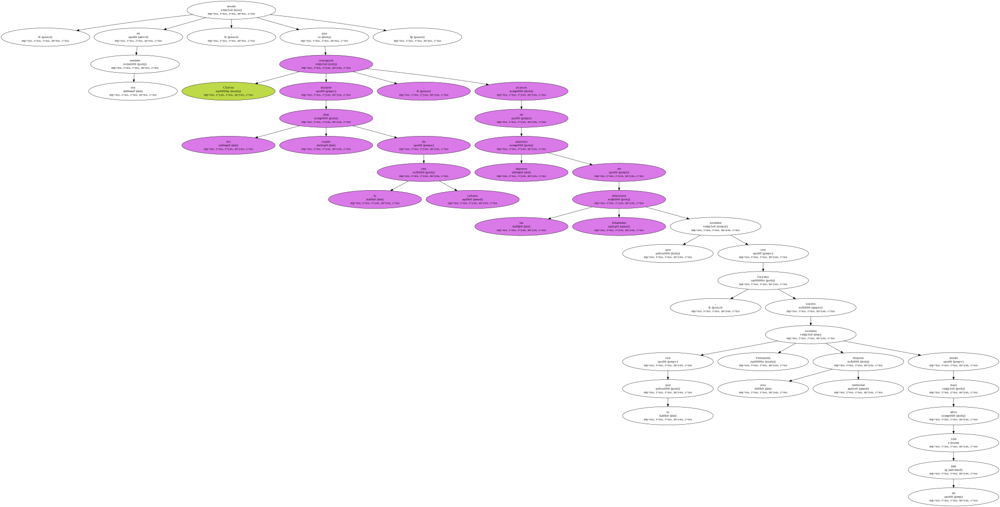" Avanzamos en cuanto a las relaciones bilaterales con Guyana . Nuestros ministros de Relaciones Exteriores se reunieron y tuvimos la oportunidad de evaluar diversos temas , conversamos bastante sobre problemas que heredamos del pasado " , apuntó el Jefe de Estado , quien también señaló que en el segundo semestre de este año hará un viaje oficial a Guyana.
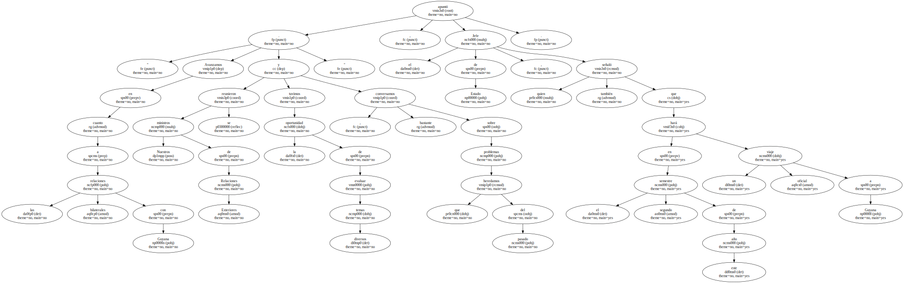El gobernante destacó que también sostuvo otros " interesantes " encuentros en La Habana , uno de ellos el realizado con el presidente de la Autoridad Nacional Palestina , Yaser Arafat , quien podría visitar Venezuela en unos dos meses , según invitación extendida por Chávez.
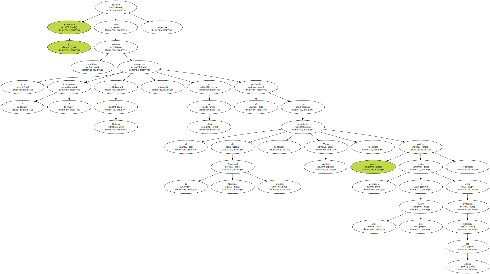El gobernante destacó que también sostuvo otros " interesantes " encuentros en La Habana , uno de ellos el realizado con el presidente de la Autoridad Nacional Palestina , Yaser Arafat , quien podría visitar Venezuela en unos dos meses , según invitación extendida por Chávez.
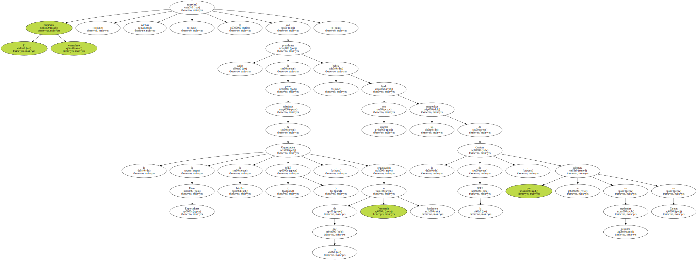El presidente venezolano , además , se entrevistó con varios presidentes de países miembros de la Organización de Países Exportadores de Petróleo ( OPEP ) , organización de la que Venezuela es fundadora , con quienes habría fijado las perspectivas de la Cumbre de la OPEP , que se celebrará en septiembre próximo en Caracas.

" Conversamos sobre las expectativas de la Cumbre OPEP de Caracas , en la que contaremos con la presencia de los presidentes de Argelia y Nigeria " , acotó.
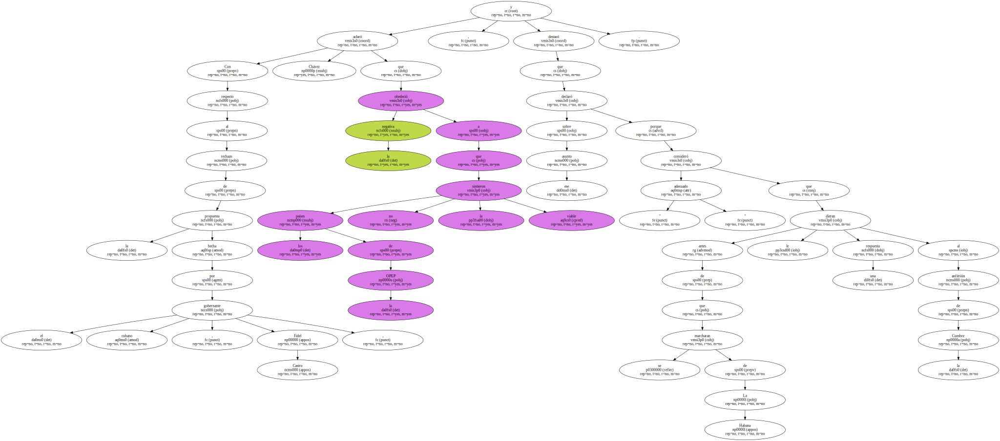Con respecto al rechazo de la propuesta hecha por el gobernante cubano , Fidel Castro , Chávez aclaró que la negativa obedeció a que los países de la OPEP no la sintieron viable , y destacó que declaró sobre ese asunto porque consideró " adecuado " que antes de que se marcharan de La Habana le dieran una respuesta al anfitrión de la Cumbre.
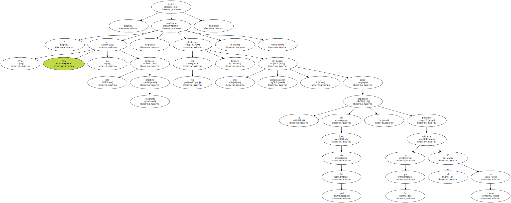" Pero esta no es una respuesta totalmente negativa , por ello también planteamos otras alternativas compensatorias , como la ampliación del Pacto de San José , con lo que podemos subsidiar el 20 por ciento " , indicó el mandatario.
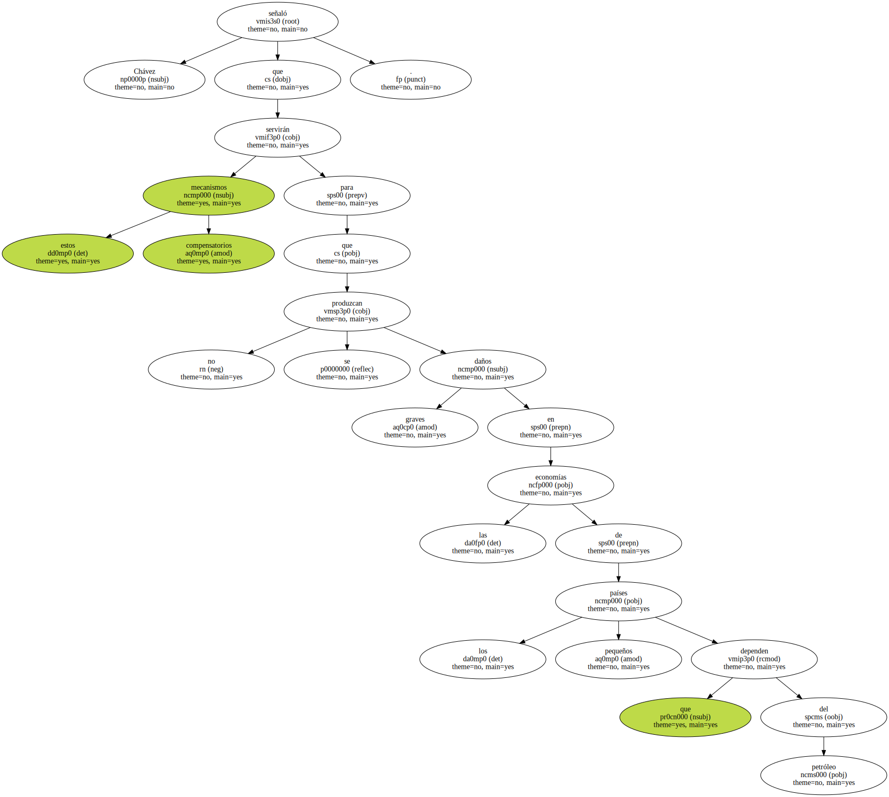Chávez señaló que estos mecanismos compensatorios servirán para que no se produzcan graves daños en las economías de los pequeños países que dependen del petróleo.
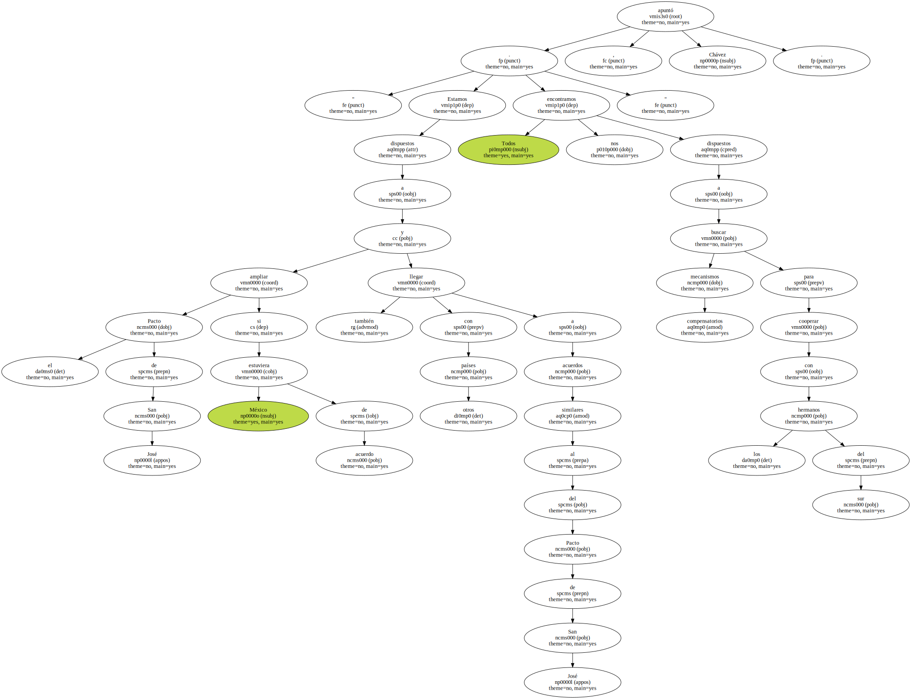" Estamos dispuestos a ampliar el Pacto de San José si México estuviera de acuerdo y también llegar con otros países a acuerdos similares al del Pacto de San José . Todos nos encontramos dispuestos a buscar mecanismos compensatorios para cooperar con los hermanos del sur " , apuntó Chávez.
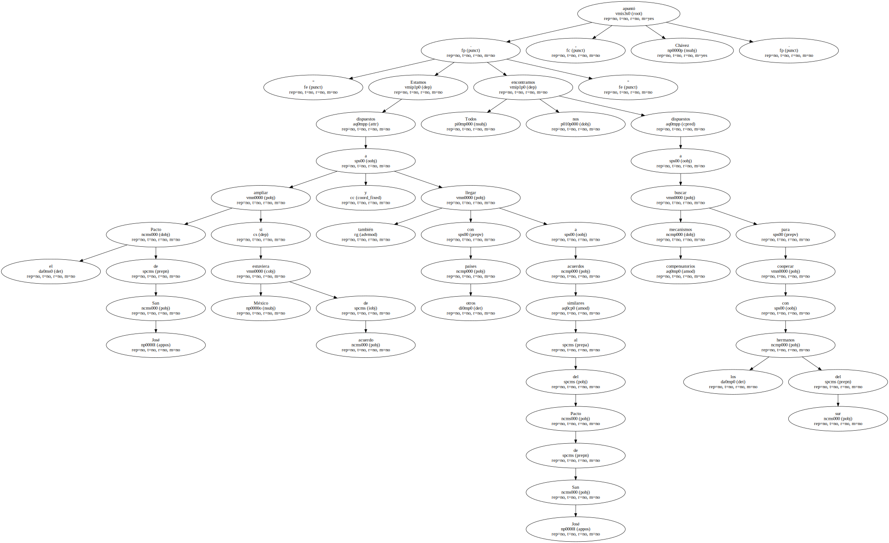